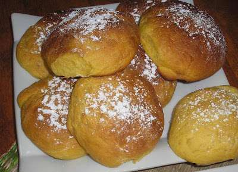
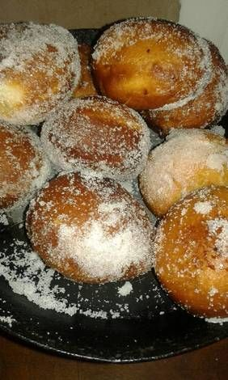

Recetas De Bollos
Homepage
Products
Services
Clients
Support
Welcome to Recetas De Bollos
Photo gallery
2021.06.18 21:41

<div class="mc_vtvc_th b_canvas"><div class="cico" style="width:234px;height:131px;"><div class="rms_iac" style="height:131px;line-height:131px;width:234px;" data-height="131" data-width="234" data-alt="Como hacer bollos de Harina de Maíz Casero | Receta bollos de Harina de maíz" data-role="presentation" data-class="rms_img" data-src="https://tse4.mm.bing.net/th?id=OVP.Squr2hKGLxYT97jK2GFJwAEsDh" frameborder="0" allow="accelerometer; autoplay; encrypted-media; gyroscope; picture-in-picture" allowfullscreen>

Menu
Bollos suaves ⋆ Receta ⋆ Larousse Cocina
Receta de Bollos Fritos de Verano - El Gourmet
Bollos con crema | Recetas de Paraguay
Bollos de leche: receta casera para el desayuno - Okdiario
Bollos – Tembi'u Paraguay
Bollos fritos relleno de dulce Receta de Gime Cacerez .
Bollo casero: como hacer pan casero fácil y económico | Mira .
Bollos de leche o Suizos - Recetas de rechupete
Receta de bollos suizos | Blog de recetas de repostería .
Recetas de Bollos - 76 recetas
Bollos suaves ⋆ Receta ⋆ Larousse Cocina
Receta de Bollos Fritos de Verano - El Gourmet
Bollos con crema | Recetas de Paraguay
Bollos de leche: receta casera para el desayuno - Okdiario
Bollos – Tembi'u Paraguay
Bollos fritos relleno de dulce Receta de Gime Cacerez .
Bollo casero: como hacer pan casero fácil y económico | Mira .
Bollos de leche o Suizos - Recetas de rechupete
Receta de bollos suizos | Blog de recetas de repostería .
Recetas de Bollos - 76 recetas